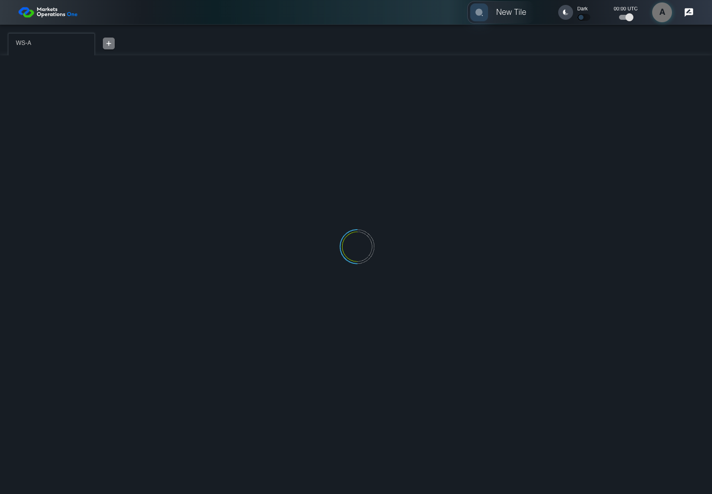

AUTH-112 fresh login acquires distinct recovery
PASS · application/run-050/auth-112-fresh-login-acquires-distinct-recovery-0face8036278-attempt-1 · ACTUAL_APPLICATION_LOCAL_SERVICES
Actual MFE; controlled identity, catalog, API responses and browser time. Signed current-BFF validation is used only where declared. Synthetic credentials and user aliases; no real identity provider acceptance.
2026-10-22T06:03:47.519Z to 2026-10-22T06:03:52.143Z
Assertions and result · Artifact manifest · Exact run inputs and source hashes
Result SHA-256:7a986935dace936f105287ac6b60498dd74b7a85bc074e4f774580e7b9de1e9fMachine observations
- session-fixture.json
c9a770fb1a30142aeb9c1c005b54c13a1026536d05fe0457b2361e508cfb3f3f
Screenshot capture: CAPTURED. Named frames: 12.
Step screenshot evidence: COMPLETE. 11/11 canonical steps have execution screenshots.
Canonical step timeline
Given User A completed logout; the previous SESSION-A and refresh R-A are recorded
Execution: PASSED.
1. step-01 Visible state after step 1: Given User A completed logout; the previous SESSION-A and refresh R-A are recorded
2026-10-22T06:03:49.932Z · 1440×1000
Step: /Users/lushevol/code/github/ratan-release-impact/workbench/tasks/ui-test-coverage-20261022/test-cases.md:4234
SHA-256:99567bb3808af958792a6b38879d848938c08b417fb7dfff75bde75fcbd51a3aAnd the LOCAL login page is visible in the same isolated browser context
Execution: PASSED.
2. step-02 Visible state after step 2: And the LOCAL login page is visible in the same isolated browser context
2026-10-22T06:03:50.169Z · 1440×1000
Step: /Users/lushevol/code/github/ratan-release-impact/workbench/tasks/ui-test-coverage-20261022/test-cases.md:4235
SHA-256:99567bb3808af958792a6b38879d848938c08b417fb7dfff75bde75fcbd51a3aAnd the credential fixture accepts user-a / FixturePass1! with new SESSION-B and workspace WS-A
Execution: PASSED.
3. step-03 Visible state after step 3: And the credential fixture accepts user-a / FixturePass1! with new SESSION-B and workspace WS-A
2026-10-22T06:03:50.418Z · 1440×1000
Step: /Users/lushevol/code/github/ratan-release-impact/workbench/tasks/ui-test-coverage-20261022/test-cases.md:4236
SHA-256:99567bb3808af958792a6b38879d848938c08b417fb7dfff75bde75fcbd51a3aWhen User A enters "user-a" into the textbox with placeholder "Enter Username" on the login page
Execution: PASSED.
4. step-04 Visible state after step 4: When User A enters "user-a" into the textbox with placeholder "Enter Username" on the login page
2026-10-22T06:03:50.737Z · 1440×1000
Step: /Users/lushevol/code/github/ratan-release-impact/workbench/tasks/ui-test-coverage-20261022/test-cases.md:4237
SHA-256:82a7f18638e1f44d126e343c9ea12807da2d0520a0a2cc85db3f86597ccd4fc4And User A enters "FixturePass1!" into the text input with placeholder "Enter Password" on the login page
Execution: PASSED.
5. step-05 Visible state after step 5: And User A enters "FixturePass1!" into the text input with placeholder "Enter Password" on the login page
2026-10-22T06:03:50.962Z · 1440×1000
Step: /Users/lushevol/code/github/ratan-release-impact/workbench/tasks/ui-test-coverage-20261022/test-cases.md:4238
SHA-256:a95c65ca56c073467578ce17791e68d1a172bbb8fca78688af2ee4dba65b174fAnd User A clicks the button labelled "Sign In" on the login page
Execution: PASSED.
6. step-06 Visible state after step 6: And User A clicks the button labelled "Sign In" on the login page
2026-10-22T06:03:51.114Z · 1440×1000
Step: /Users/lushevol/code/github/ratan-release-impact/workbench/tasks/ui-test-coverage-20261022/test-cases.md:4239
SHA-256:7957e49f9a3218795a286fe2de05b84bb886539e6a66c05fd1a5ace0bf5992e2Then the tab labelled "WS-A" inside the tablist named "workspaces" on the Home page is visible
Execution: PASSED.
7. step-07 Visible state after step 7: Then the tab labelled "WS-A" inside the tablist named "workspaces" on the Home page is visible
2026-10-22T06:03:51.195Z · 1440×1000
Step: /Users/lushevol/code/github/ratan-release-impact/workbench/tasks/ui-test-coverage-20261022/test-cases.md:4240
SHA-256:7957e49f9a3218795a286fe2de05b84bb886539e6a66c05fd1a5ace0bf5992e2When the browser changes this page from visible to hidden
Execution: PASSED.
8. step-08 Visible state after step 8: When the browser changes this page from visible to hidden
2026-10-22T06:03:51.267Z · 1440×1000
Step: /Users/lushevol/code/github/ratan-release-impact/workbench/tasks/ui-test-coverage-20261022/test-cases.md:4241
SHA-256:1a0b3de19e53ef75f16b5ac9dea6daba1e06cc06e333e334ff7df0ce38fe801eThen the acquisition POST body uses the new SESSION-B access credential
Execution: PASSED.
9. step-09 Visible state after step 9: Then the acquisition POST body uses the new SESSION-B access credential
2026-10-22T06:03:51.331Z · 1440×1000
Step: /Users/lushevol/code/github/ratan-release-impact/workbench/tasks/ui-test-coverage-20261022/test-cases.md:4242
SHA-256:1a0b3de19e53ef75f16b5ac9dea6daba1e06cc06e333e334ff7df0ce38fe801eWhen the fixture accepts acquisition for SESSION-B
Execution: PASSED.
10. step-10 Visible state after step 10: When the fixture accepts acquisition for SESSION-B
2026-10-22T06:03:51.401Z · 1440×1000
Step: /Users/lushevol/code/github/ratan-release-impact/workbench/tasks/ui-test-coverage-20261022/test-cases.md:4243
SHA-256:7957e49f9a3218795a286fe2de05b84bb886539e6a66c05fd1a5ace0bf5992e2Then the installed refresh credential belongs to SESSION-B and differs from R-A
Execution: PASSED.
11. step-11 Visible state after step 11: Then the installed refresh credential belongs to SESSION-B and differs from R-A
2026-10-22T06:03:51.482Z · 1440×1000
Step: /Users/lushevol/code/github/ratan-release-impact/workbench/tasks/ui-test-coverage-20261022/test-cases.md:4244
SHA-256:7957e49f9a3218795a286fe2de05b84bb886539e6a66c05fd1a5ace0bf5992e2
Additional named frames

The final visible state after the named test assertions.
2026-10-22T06:03:51.592Z · 1440×1000Step: Test source: /Users/lushevol/code/github/ratan-release-impact/workbench/e2e/audit-specs/auth-final.spec.ts:30
SHA-256:
7957e49f9a3218795a286fe2de05b84bb886539e6a66c05fd1a5ace0bf5992e2Screenshots establish visible state only. Assertions and traces support functional claims.